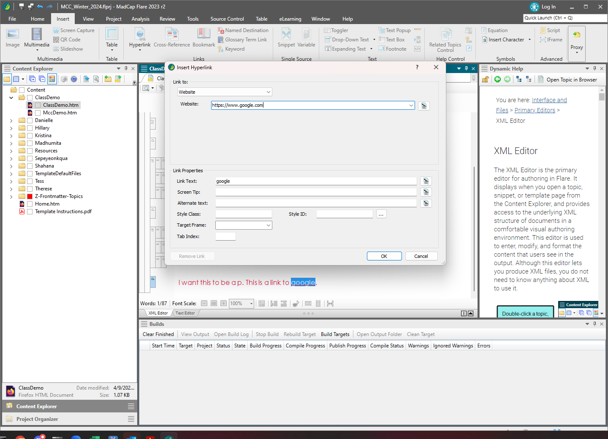

Insert an external link in the Flare topic
You often need to reference external websites when writing.
- Have your cursor where you want to insert the link in your Flare topic.
Alternatively, you can enter the text for the link and select that
text.
- From the Insert ribbon, click
Hyperlink.
- In the Insert Hyperlink dialog box, select
Website from the Link to list.
- Enter the URL in the Website field.
- If it is not already populated, enter the Link
Text.

- Click OK.
You link is inserted.